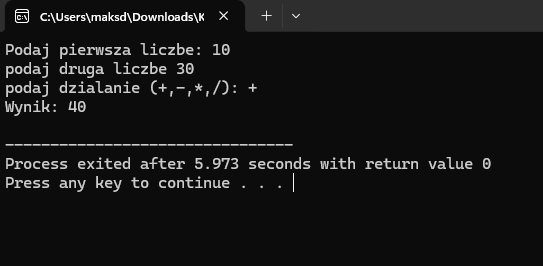

Kalkulator Funkcyjny C++
Aplikacja konsolowa realizująca operacje matematyczne z dbałością o poprawność logiczną kodu.

Moim celem jest solidne opanowanie fundamentów inżynierii oprogramowania.
Obecnie jestem na pierwszym roku Informatyki w Wyższej Szkole Ekonomii i Innowacji w Lublinie. Skupiam się na nauce logicznego myślenia, algorytmiki oraz poznawaniu struktur baz danych. Uważam, że studia to idealny czas, aby zacząć budować praktyczne doświadczenie w realnych projektach biznesowych.
Szukam bezpłatnych praktyk, ponieważ zależy mi na nauce od profesjonalistów. Chcę poznać cykl życia projektu IT, narzędzia pracy grupowej (jak Git czy Jira) oraz zobaczyć, jak w praktyce tworzy się systemy, z których korzystają tysiące użytkowników. Jestem gotowy na intensywną naukę i pomoc w codziennych zadaniach zespołu.
Technologie i narzędzia, które aktualnie poznaję na WSEI oraz we własnym zakresie:c++/c#/luau/html
Skupiam się na opanowaniu języka C++ (podstawy programowania) pracy z systemem kontroli wersji Git. Korzystam z Visual Studio Code i uczę się podstaw tworzenia stron internetowych (HTML). Jestem ambitny, szybko się uczę i chętnie podejmę się prostych zadań wspierających w zespole programistycznym.
Informatyka to nie tylko kod, to przede wszystkim rozwiązywanie problemów.
Szybko przyswajam nową wiedzę i nie boję się pytać, gdy napotykam trudności.
Potrafię pracować w zespole i zależy mi na jasnej wymianie informacji.
Sprawnie poruszam się w edytorach kodu i potrafię samodzielnie konfigurować środowisko pod proste projekty.
Szanuję czas swój i zespołu – rzetelnie podchodzę do powierzonych zadań.
Na studiach WSEI rozwijam umiejętność analitycznego podejścia do zadań.
Szukam praktyk, bo chcę budować swoją przyszłość zawodową w branży IT

Aplikacja konsolowa realizująca operacje matematyczne z dbałością o poprawność logiczną kodu.

Prosta animacja 3D stworzona w programie Blender.